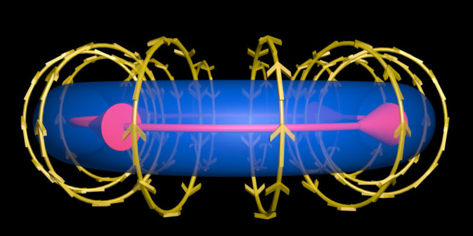

Los imanes y la electricidad han sido objeto de fascinación de la humanidad desde siempre.
Su abordaje inicial tomó cursos diferentes que llegaron a un punto de encuentro a finales del siglo XIX.
Para poder entender de que va el electromagnetismo, repasemos algunos conceptos básicos.

| tipo de radiacion | longitud de la onda (M) | escala aproximada de la longitud de onda (ejemplo de tamaño) | freciencia (hz) |
| radio | 1 meter – 10,000 km | parecida a los edificios | 300 MHz – 30 Hz |
| microondas | 1 mm – 1 meter | mariposas | 300 GHz – 300 MHz |
| infrarrojo | 700 nm – 1 mm | humanos | 430 THz – 300 GHz |
| luz visible | 400 nm – 700 nm | protosoos | 790 THz – 430 THz |
| luz ultravioleta | 10 nm – 400 nm | moleculas | 30 PHz – 790 THz |
| Rayos X | 0.01 nm – 10 nm | Atomos | 30 EHz – 30 PHz |
| Rayos Gama | 0.01 nm | Nucleo Atomico | 30 EHz |
La división básica (no única, ni nítida) del espectro electromagnético se hace atendiendo a los rangos de frecuencias o de longitudes de onda. En orden creciente de frecuencias (decrecn longitudes de onda) iente eel espectro electromagnético abarca las siguientes regiones: ondas de baja y radiofrecuencia, microondas, infrarrojo, visible, ultravioleta, rayos X y rayos Gamma. Sus longitudes de onda van desde kilómetros hasta billonésimas de metro. (El producto de la frecuencia por la longitud de onda, en el vacío, es la velocidad de la luz, unos 300.000 km/s). Las diferentes regiones del espectro se caracterizan, también, por otra magnitud, la energía. En su interacción con la materia, las señales electromagnéticas muestran su comportamiento corpuscular, intercambiando energía en cantidades discretas múltiplos de un “cuanto” elemental, el fotón, cuya energía es proporcional a su frecuencia. Desde el punto de vista de la energía, el espectro se subdivide en dos grandes rangos: el de las radiaciones no ionizantes y el de las ionizantes. Ésta es capaz de hacer saltar electrones ligados a los átomos. Son ionizantes ‑y peligrosos, incluso a intensidades bajas‑ los rayos X y los Gamma. No lo son ni la luz visible, ni las radiaciones de frecuencia inferior (infrarrojos, microondas, etc.).